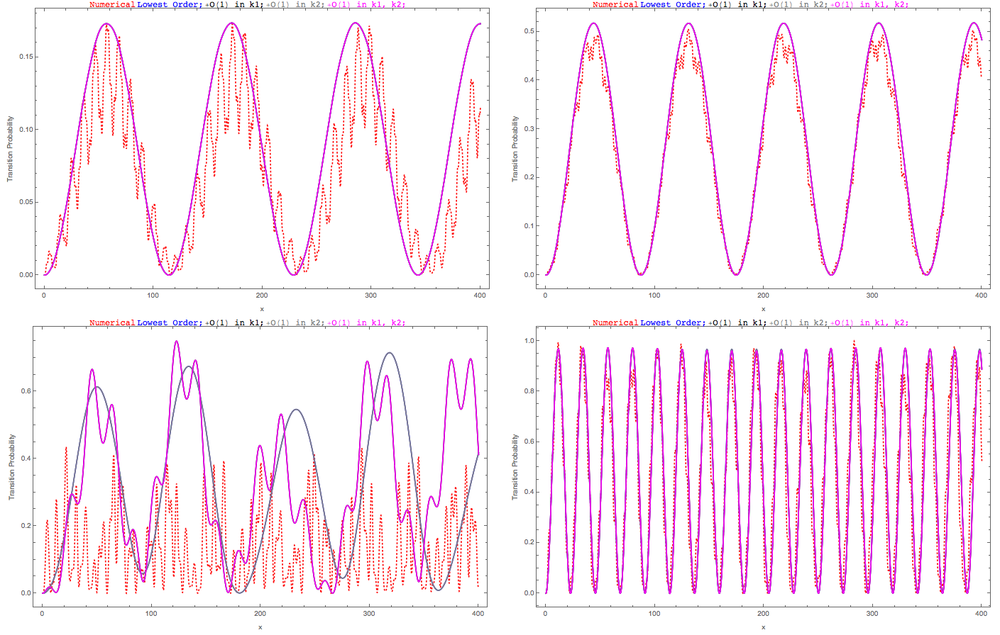

Two-frequency Matter Perturbation¶
However, as we proceed to the more realistic matter profile, multi-frequency matter profiles are necessary. Generally, we choose the perturbation matter profile upon a constant background to be
Using definition of \(\eta\) we conclude that
Hence we write down
Two Frequencies¶
To work out the equation of motion that we could solve, we deal with two frequencies first,
while
Rewrite Multiplication into Summation¶
Summation Algebra
A multiplication of two summations
The rule is to sum over a line \(m+n=N\) then sum over \(N\).

Fig. 17 Rewrite multiplication of summations into summations only.
The multiplication becomes
To proceed on, we rewrite \(\sum_{a = 1}^2 A_a \sin (k_a x + \phi_a)\),
We define
where
and
To adopt the RWA approximation, we require some integers for each summation to satisfy the relations
so that the \(x\) dependent exponential almost vanishes (obtain the largest wavelength in fact). Notice that each \(n_{ij,N}\) depends on the summation index \(N\).
We solve each \(n_{ij,N}\),
Another important constrain is that \(n\leq N\), thus we have
for each summation over \(N\) and we require \(N\geq N_{ij}\) for each summation. We also assumed \(k_1 > k_2\). In other words, \(N_{ij}\) are the lower limits of the summations over \(N\)‘s.
Using RWA, we keep only the resonance terms for the summation over \(n\)‘s,
and
Comment on This Result
I can imagine how hard it is to solve the equation of motion with this \(h\). Well, is it?
One by One Approximation¶
After reading Kelly Patton et al, we decided to try the approximation they are using.
By looking at the Hamiltonian, we can identify terms like this
where the parenthensis part is what we would have if only one frequency is used and we also have
for all frequencies.
This reminds us that each of these terms means the interference due to other frequencies. As a simple example, we demonstrate two-frequency case.
The two-frequency matter perturbation system has a Hamiltonian element \(H_{12}\)
where
with red color coding the second frequency and blue coding the first frequency. \(h\) is symmetric under exchange of index 1, 2 since the exchange simply switches \(h_1\) and \(h_2\).
Which one Dominates?¶
To grasp a clue, we need to identify which term in the summation dominates. Without a good analytical analysis, the only way to do is to numerically calculate the effect of each order.
By order, we are already thinking of a dominating term which is not true. Nonethless, we assume RWA can be applied to the part that looks like one frequency only. In our two-frequency example, first RWA leads to
where
With this approximation, we can use RWA again by requiring
where the integer solutions are
Now we can remove all the summations using another RWA approximation. However, whether it holds is up to investigation.
The final result is
Lowest order only works for very special cases where on of the wave vectors is very close to resonance. To fix this problem, we could add more higher orders, however, what does it mean to have higher orders needs a discussion.
How to Include Higher Orders
The first thought of higher orders is to add more from the summation before the last RWA. However, it is highly suspicious that this is just like the one frequency case which has a very fast drop in the resonance width as we go to higher orders.
This guess needs proof, numerically and analytically.
But notice, when we said higher orders, we actually mean higher orders in both \(n_1\) and \(n_2\). Notice that we can alway write the 12 element of Hamiltonian as (4), i.e.,
without any approximations.
One of the choices of adding higher orders is to use \(n_1=\mathrm{Round}\left[ \frac{\omega_m}{k_1} \right]\) and \(n_2=\mathrm{Round}\left[ \frac{ n_1 k_1 - \omega_m }{k_2} \right]\) as the lowest order in \(h_1\) and \(n_2=\mathrm{Round}\left[ \frac{\omega_m}{k_2} \right]\) and \(n_1=\mathrm{Round}\left[ \frac{ n_2 k_2 - \omega_m }{k_1} \right]\) as the lowest order in \(h_2\). Adding higher orders means we add or remove one from \(n_1\) in \(h_1\) and recalculate \(n_2\), while add or remove one from \(n_2\) in \(h_2\) and recalculate \(n_1\).
That is to say, we always keep the RWA condition for the last RWA process. What can be changed is the first assumption that the most important term is when only one frequency is relavent which is not always true.
As an example, we now consider \(n_{i,\pm 1}=n_{i,0}\pm 1\) and \(n'_{i,\pm 1} = \mathrm{Round}\left[ \frac{ n_{j,\pm 1} k_j - \omega_m }{k_i} \right]\) with \(j\neq i\), thus we replace \(n_{i,0}\) with \(n_{i,\pm 1}\) to get higher order corrections.
Fig. 18 Top Left: Smaller wavenumber \(k_1=0.95\) is at resonance and it has smaller perturbation amplitude (\(k_2=1.55\)); Top Right: Smaller wavenumber \(k_1=0.95\) is at resonance and it has larger perturbation amplitude (\(k_2=1.55\)); Bottom Left: Larger wavenumber \(k_2=0.95\) is at resonance and it has smaller perturbation amplitude (\(k_1=0.35\)); Bottom Right: Larger wavenumber \(k_2=0.95\) is at resonance and it has larger perturbation amplitude (\(k_1=0.35\)). Red dotted line is numerical solution, black line is lowest approximation of \(k_2\), magenta is higher order approximation of \(k_2\).
In real physical systems, it is more likely to have a matter profile so that we have the bottom left situation. In other words, RWA method breaks down in the most interesting case.
Another choice is to add or remove one for both \(n_1\) and \(n_2\) for both terms in the Hamiltonian. The approach will define the order \(n_{order}\) first, as will be applied to the n’s. As an example, adding first order to \(n_1\) will include all the possible combinations of \(n_1,n_1\pm 1\) for both terms without changing \(n_2\). As an example, we compare the different orders of \(n_1\) only with the numerical calculation without approximations.

Fig. 19 Compare the different orders with the numerical calculation without approximations, where red dotted line is the numerical calculation without approximation. As we could see from the figure, including up to third order in \(n_1\) fixes the deviation from numerical calculation (red dotted line). The wave vectors are \(k_1=0.5\), \(k_2=0.8\), amplitudes are \(A_1=0.1 k_1^{-5/3}\), \(A_2=0.1 k_2^{-5/3}\), mixing angle in background matter is \(\theta_m=\pi/5\).
Now according to the complate expression of the 12 element of Hamiltonian (4), there is no difference between \(n_1\) and \(n_2\). Thus whenever we talk about different orders, we should not distinguish between the two integers. However, how to define zero order is not clear to me at this point. To find out, we need to know the resonance width of each pair of integers. The insight comes from the single frequency result. We notice in equation single frequency width, single frequency width depends on the coefficient in front of the phase in the Hamiltonian and the integer. The task is to derive or guess the resonance width for each pair of integers \(n_1, n_2\).
Which Approximation Breaks Down
We ask the question, which approximation is breaking down exactly during our RWA? To find out, we first include all the orders after the first assumption, i.e., we do not use RWA for the second time, which means (3) holds but no RWA will be applied to this.
Not notice that the summation in (3) is due to the Jacobi-Anger expansion, which is not even helpful in our next calculation. Therefore, we trace back to their original expressions, which leads to
We then perform a numerical calculation using this Hamiltonian element and compare it with the full numerical results.
A More Systematic Thinking of 2-Frequency¶
The 12 element can be written as
where
For simplicity, we define
Notice that
Using these definitions, we rewrite the Hamiltonian 12 element
where \(B_2{n_1,n_2}(k_1,k_2,A_1,A_2)\equiv B_{n_1,n_2}(k_1,k_2,A_1,A_2) + B_{n_2,n_1}(k_2,k_1,A_2,A_1)\) is what we are interested in.
Comparing this expression with the single frequency one which is almost the same structure if we remove the two sums, and using the result transition probability for single frequency, we can infer that the transition probability,
where \(\hat B_2=\frac{ B_2 }{\omega_m}=\frac{B_{n_1,n_2}(k_1,k_2,A_1,A_2) + B_{n_2,n_1}(k_2,k_1,A_2,A_1)}{\omega_m}\) and \(\hat g_2 = \frac{g}{\omega_m} = n_1 \hat k_1 + n_2 \hat k_2 - 1\) which tells us how far from resonance and \(q_2=\sqrt{ \lvert \hat B_2 \rvert^2 + \hat g^2 }\).
The width then is similar to single frequency width, except that we could not define the width as a function of single variables since two wave vector are used. However, it is still reasonable to give the FWHM condition,
For a given pair of integers \(n_1,n_2\), we could find the amplitude as a function of \(k_1, k_2\).
Solve The Problem
A solution shows that this is correct. The solution to the second element of wave function is
It is very confusing when we write down the requirement for width (5), since we need to assume \(\lvert \hat F_2 \rvert\) to be almost constant to arrive this result. What values of \(\hat k_1,\hat k_2\) do we need to calculate \(\lvert \hat F_2 \rvert\)?
The idea is to find the FWHM when a point is deviating from the line. To be specific, we find the line that is the resonance using \(n_1 k_1 + n_2 k_2 = 1\), which is plotted as dashed red line in Fig. 20. To characterise the distance, we need a line that is perpendicular to this red dashed resonance line, which also is passing through the values of \((k_10,k_2)=(k_{10},k_{20})\) which is given in the system. Under this scheme, the resonance width is define as the distance from the resonance line when the amplitude reduces to half on this blue dotted perpendicular line.

Fig. 20 Diagram of Width.
In the language of algebra, we could derive the interception point of the two lines, which is
where \(k_{10}\) and \(k_{20}\) are the values given in the matter perturbation of the system.
Using this method, we can define a reasonable width for two frequency matter perturbation case,
Derivation of Width for 2 Frequency Matter Perturbation
First of all, we assume that a point \((\hat k_{10},\hat k_{20})\) is a displace from the line by the FWHM \(\hat L\) in \(\hat k_2\), which means that, the line that is paralell to the resonance line and passing through the point \((\hat k_{10},\hat k_{20})\) is displaced by \(\hat L\) in \(\hat k_2\),
We assume the width of resonance is not large so that we could use resonance values for \(\hat k_1, \hat k_2\). For FWHM, we require
where we could apply \(n_1 k_{1,\mathrm{intercept}} + n_2 k_{2,\mathrm{intercept}} -1 = 0\) because we assumed the width is narrow, thus
However, \(L\) is not the actually deviation from the interception point. We could calculate the actual deviation \(\Gamma_2\) on the blue line in figure Fig. 20, which is given by
i.e., we find the resonance width
To apply the width in a problem, we need to calculate the distance between the given point \((k_{10},k_{20})\) of the system to a certain resonance line which depends on \(n_1,n_2,A_1,A_2,\theta_m\). This is as simple as point to line distance, which is calculated using
Here comes the question: what is the requirement for a pair of \((n_1,n_2)\) to be important?
We answer this by defining a quantity that compares the distance from a certain resonance line with the width of this resonance line,
Caveats
There are caveats when calculating the distance \(d\) or the width \(\Gamma_2\).
The first problem is the zeros. In special cases, \(n_1=0\) as an example, the distance \(d\) using the equation (6) will lead to infinities. Same thing happens to the width.
The solution is to treat the special cases seperately. As an result, we conclude that
The \(\infty\) is simply a defined value which is to ensure the final values of \(Q_2\) to be reasonable.
Meanwhile, the width can always be written as \(\Gamma_2 = \frac{B_2(k_{1,\mathrm{intercept}},k_{2,\mathrm{intercept}})}{\sqrt{n_1^2 + n_2^2}}.\) as long as \(n_1\neq 0\&\& n_2\neq 0\). However, what we mean by \(k_{1,\mathrm{intercept}},k_{2,\mathrm{intercept}}\) has special situations.
For \(n_1\neq 0\&\& n_2\neq 0\), we have the general solution
For \(n_1=0\&\& n_2\neq 0\), we have
Finally, for \(n_1\neq 0\&\& n_2 =0\), we need
As for \(n_1=0\&\& n_2=0\), we define the width to be zero.
One last thing,